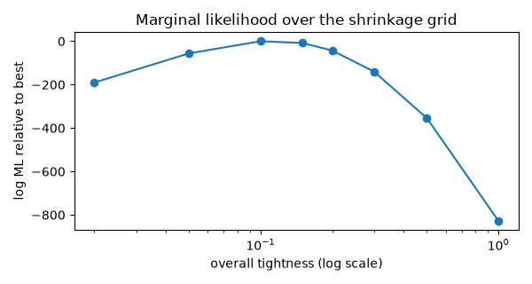
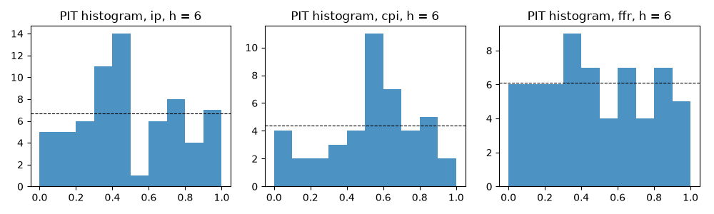

Note
Go to the end to download the full example code.
Forecasting with a medium-sized Bayesian VAR#
A VAR with ten variables and thirteen lags has 131 coefficients per equation; with fifty years of monthly data that is one parameter for every five observations and the least-squares estimate forecasts worse than a random walk. Banbura, Giannone and Reichlin (2010) showed that Minnesota-type shrinkage towards univariate random walks lets such systems forecast well, with the shrinkage tightened as the system grows; Giannone, Lenza and Primiceri (2015) showed that the tightness can be chosen by the marginal likelihood rather than by hand.
This example sets up the medium system in levels, picks the prior tightness by marginal likelihood, and runs a recursive forecasting exercise against the least-squares VAR and a dynamic factor model, scoring the Bayesian VAR’s predictive distributions as well as its point forecasts.
Data#
Ten monthly series, 1965-2019, in the Banbura-Giannone-Reichlin convention: logs times 100 for levels, percentage points for rates, no differencing. The prior does the work of handling the trends.
import matplotlib.pyplot as plt
import numpy as np
from cultivars.bayes.priors import NormalInverseWishartPrior
from cultivars.forecast.backtest import Backtest
from cultivars.forecast.calibration import Calibration
from cultivars.forecast.comparison import ForecastComparison
from cultivars.multivariate.large_dim.bayesian import BVAR
from cultivars.multivariate.large_dim.dynamic_factor import DFM
from cultivars.multivariate.reduced_form.vector_autoregression import VAR
from _fred import fetch
series = {
"ip": "INDPRO",
"emp": "PAYEMS",
"u": "UNRATE",
"cpi": "CPIAUCSL",
"ppi": "PPIACO",
"ffr": "FEDFUNDS",
"gs10": "GS10",
"m2": "M2SL",
"houst": "HOUST",
"rpi": "RPI",
}
logged = ("ip", "emp", "cpi", "ppi", "m2", "houst", "rpi")
data = fetch(series, start="1965-01-01", end="2019-12-01", units=dict.fromkeys(logged, "log"))
data[list(logged)] *= 100.0
names = tuple(series)
panel = data.to_numpy()
order = 13
n_regressors = order * panel.shape[1] + 1
print(
f"{panel.shape[0]} months, {panel.shape[1]} variables, {n_regressors} regressors per equation"
)
660 months, 10 variables, 131 regressors per equation
Least squares as the cautionary tale#
The unrestricted VAR(13) fits; whether its companion matrix is stable and how far its largest root sits from one is the first sign of the overfitting the prior is there to prevent.
ols = VAR(panel, order=order, names=names).fit()
stability = ols.stability_check()
print(f"OLS VAR(13): largest root {stability.max_modulus:.3f}, stable: {stability.is_stable}")
OLS VAR(13): largest root 0.999, stable: True
Choosing the tightness by marginal likelihood#
The conjugate Normal-inverse-Wishart prior shrinks each equation toward a random walk, with the overall tightness scaling how hard. Its marginal likelihood is available in closed form, so a grid over the tightness is a complete hyperparameter search; differences between grid points are log Bayes factors.
grid = np.array([0.02, 0.05, 0.1, 0.15, 0.2, 0.3, 0.5, 1.0])
log_ml = np.empty(grid.shape)
for i, tightness in enumerate(grid):
prior = NormalInverseWishartPrior(tightness=tightness)
log_ml[i] = (
BVAR(panel, order=order, prior=prior, names=names).fit(n_draws=1).log_marginal_likelihood
)
best = float(grid[np.argmax(log_ml)])
for tightness, value in zip(grid, log_ml, strict=True):
marker = " <-" if tightness == best else ""
print(f"tightness {tightness:5.2f} log marginal likelihood {value:12.2f}{marker}")
fig, ax = plt.subplots(figsize=(6, 3.2))
ax.plot(grid, log_ml - log_ml.max(), "o-")
ax.set_xscale("log")
ax.set_xlabel("overall tightness (log scale)")
ax.set_ylabel("log ML relative to best")
ax.set_title("Marginal likelihood over the shrinkage grid")
fig.tight_layout()

tightness 0.02 log marginal likelihood -4337.60
tightness 0.05 log marginal likelihood -4203.29
tightness 0.10 log marginal likelihood -4147.41 <-
tightness 0.15 log marginal likelihood -4155.62
tightness 0.20 log marginal likelihood -4190.17
tightness 0.30 log marginal likelihood -4287.64
tightness 0.50 log marginal likelihood -4501.84
tightness 1.00 log marginal likelihood -4975.36
The posterior at the chosen tightness#
The summary reports the own-first-lag coefficient of each equation with its posterior interval – the random-walk prior centres these at one – and the posterior probability that the system is stable, which the prior deliberately leaves well below one.
BVAR(13) Results
================================================================================
Model: BVAR(13) Prior: niw(l1=0.1, l3=1, l4=100)
Draws: 1000 Variables: 10
Observations: 647 Dummy rows: 0
Trend: c log ML: -4147.414
--------------------------------------------------------------------------------
equation own L1 mean 68% interval
ip 0.9908 [0.9567, 1.0221]
emp 1.0269 [0.9952, 1.0594]
u 0.8144 [0.7810, 0.8479]
cpi 1.1301 [1.0981, 1.1635]
ppi 1.1045 [1.0699, 1.1397]
ffr 1.1025 [1.0709, 1.1343]
gs10 1.0806 [1.0502, 1.1107]
m2 1.1652 [1.1366, 1.1926]
houst 0.6797 [0.6464, 0.7129]
rpi 0.8107 [0.7780, 0.8419]
================================================================================
The posterior is exact Normal-inverse-Wishart; draws are independent, not a
Markov chain, so no convergence diagnostics apply.
log_marginal_likelihood is the sample's, with the dummy-observation contribution
divided out; differences across priors are log Bayes factors, and hyperparameter
choice should maximize it (Giannone-Lenza-Primiceri).
Posterior probability of stability: 0.25. Mass near the unit circle is the
random-walk prior speaking, not a defect.
No llf, parameter count, or information criteria are reported: a posterior has
none, and the marginal likelihood is the honest replacement.
forecast() is the full posterior predictive -- parameter and shock uncertainty
jointly.
Recursive forecasting exercise#
Expanding window from 1990, forecasting one to twelve months ahead, re-estimating every six months to keep the exercise short. The Bayesian VAR forecasts from its posterior predictive, so the harness keeps its draws; the least-squares VAR and the factor model are point forecasters. The factor model’s factor VAR is stationary, so it is estimated on first differences with the Bai-Ng factor count chosen inside each window, and its forecasts are cumulated back to levels.
start = int(np.flatnonzero(data.index == "1990-01-01")[0])
horizons = 12
step = 6
def fit_bvar(window: np.ndarray) -> object:
"""Conjugate BVAR at the chosen tightness, 300 posterior draws."""
return BVAR(window, order=order, prior=prior, names=names).fit(n_draws=300, seed=8)
class DifferencedDFM:
"""Dynamic factor model on first differences, forecasting levels by cumulation."""
def __init__(self, window: np.ndarray) -> None:
"""Fit the factor model to the differenced window and keep the last level."""
self.last = np.asarray(window)[-1]
self.result = DFM(np.diff(window, axis=0), order=2, max_factors=6, series_names=names).fit()
def forecast(self, steps: int) -> np.ndarray:
"""Cumulate the forecast differences onto the last observed level."""
return self.last + np.cumsum(self.result.forecast(steps), axis=0)
records = {
"BVAR": Backtest(panel, fit_bvar, horizons=horizons, start=start, step=step, names=names).run(
seed=8
),
"OLS": Backtest(
panel,
lambda w: VAR(w, order=order, names=names).fit(),
horizons=horizons,
start=start,
step=step,
names=names,
).run(),
"DFM": Backtest(
panel, DifferencedDFM, horizons=horizons, start=start, step=step, names=names
).run(),
}
print(f"{records['BVAR'].n_origins} origins; BVAR draws kept: {records['BVAR'].is_density}")
59 origins; BVAR draws kept: True
Point accuracy relative to least squares#
Root mean squared error ratios to the OLS VAR, below one favouring the row. The BGR pattern is that shrinkage helps most at long horizons and for the trending series, and that the factor model and the Bayesian VAR are close competitors.
shown = ("ip", "emp", "cpi", "ffr", "gs10")
columns = [names.index(n) for n in shown]
for h in (1, 3, 6, 12):
print(f"\nh = {h:2d} " + " ".join(f"{n:>6s}" for n in shown))
for model in ("BVAR", "DFM"):
ratio = records[model].rmse[h - 1, columns] / records["OLS"].rmse[h - 1, columns]
print(f" {model:5s} " + " ".join(f"{r:6.2f}" for r in ratio))
h = 1 ip emp cpi ffr gs10
BVAR 0.67 0.58 0.87 0.57 0.67
DFM 0.69 0.70 1.02 0.45 0.69
h = 3 ip emp cpi ffr gs10
BVAR 0.83 0.72 0.89 0.69 0.74
DFM 0.77 0.92 0.98 0.39 0.77
h = 6 ip emp cpi ffr gs10
BVAR 0.85 0.82 1.06 0.75 0.84
DFM 0.73 0.96 1.10 0.38 0.76
h = 12 ip emp cpi ffr gs10
BVAR 0.91 0.89 1.09 0.80 0.84
DFM 0.79 0.96 1.07 0.48 0.70
Are the differences significant?#
Diebold-Mariano tests of the BVAR against OLS on squared-error loss, with the Harvey-Leybourne-Newbold small-sample correction, for industrial production at each horizon. The exercise has few origins by design, so the p-values are a reminder of how little a short evaluation sample can resolve.
for h in (1, 6, 12):
bvar_loss = records["BVAR"].losses("squared", horizon=h, name="ip")
ols_loss = records["OLS"].losses("squared", horizon=h, name="ip")
test = ForecastComparison(bvar_loss, ols_loss).compute(horizon=h)
print(f"ip, h = {h:2d}: HLN statistic {test.hln_statistic:6.2f}, p = {test.hln_pvalue:.3f}")
ip, h = 1: HLN statistic -3.66, p = 0.001
ip, h = 6: HLN statistic -2.05, p = 0.045
ip, h = 12: HLN statistic -1.29, p = 0.203
Density forecast calibration#
The Bayesian VAR’s predictive draws can be scored, not just their means. The CRPS and log score summarize sharpness and calibration together; the probability integral transform separates them. A flat PIT histogram is a calibrated forecaster; a U shape means the predictive bands were too narrow.
density = records["BVAR"]
print("Mean CRPS by horizon for ip, cpi, ffr:")
for h in (1, 6, 12):
print(
f" h = {h:2d} "
+ " ".join(
f"{density.mean_crps[h - 1, names.index(n)]:7.3f}" for n in ("ip", "cpi", "ffr")
)
)
h = 6
calibration = Calibration(
density.paths[:, :, h - 1, :], density.realized[:, h - 1, :], names=names
).compute()
print(calibration.summary())
counts = calibration.histogram(bins=10)
fig, axes = plt.subplots(1, 3, figsize=(10, 3))
for ax, name in zip(axes, ("ip", "cpi", "ffr"), strict=True):
ax.bar(np.arange(10) / 10 + 0.05, counts[names.index(name)], width=0.1, color="C0", alpha=0.8)
ax.axhline(counts[names.index(name)].sum() / 10, color="k", ls="--", lw=0.8)
ax.set_title(f"PIT histogram, {name}, h = {h}")
fig.tight_layout()

Mean CRPS by horizon for ip, cpi, ffr:
h = 1 0.293 0.124 0.180
h = 6 1.310 0.631 0.762
h = 12 2.366 1.242 1.137
Density Forecast Calibration
================================================================================
Series: 10 Origins: 59
--------------------------------------------------------------------------------
series PIT mean PIT sd Berkowitz p
ip 0.553 0.286 0.1316
emp 0.574 0.254 0.0027
u 0.412 0.259 0.0879
cpi 0.423 0.307 0.0405
ppi 0.432 0.330 0.0007
ffr 0.482 0.228 0.0001
gs10 0.506 0.269 0.8207
m2 0.546 0.322 0.0034
houst 0.570 0.281 0.0004
rpi 0.643 0.314 0.0001
================================================================================
Under correct calibration the PIT series is uniform: mean 0.500, standard
deviation 0.289, Berkowitz p-value well away from zero. A U-shaped histogram is
overconfidence, a hump is overdispersion, a slope is bias -- histogram() draws
the picture.
The Berkowitz null assumes one-step transforms; multi-step forecasts overlap
mechanically, and their serial correlation reads as miscalibration here.
What to take away#
Shrinkage is a modelling decision with a likelihood attached, and the marginal-likelihood grid makes it a reported one. The gains over least squares are the easy part; the comparison that matters is with the factor model, which captures the same comovement in a different way, and with a longer evaluation sample than this example runs, since a dozen origins per year cannot separate forecasters that are both good.
Total running time of the script: (0 minutes 24.219 seconds)